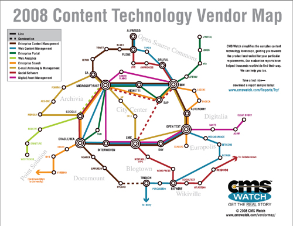
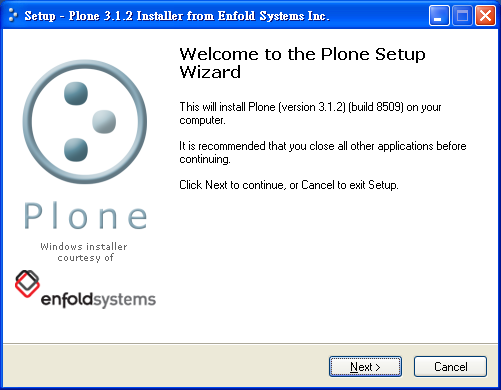
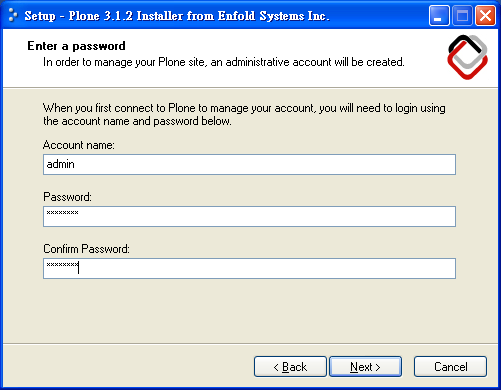
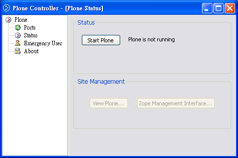
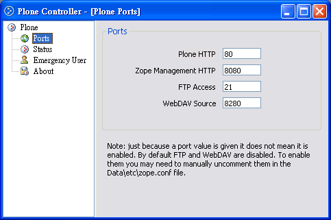
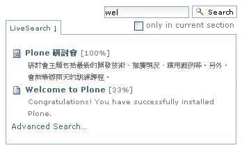
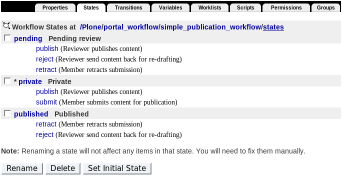
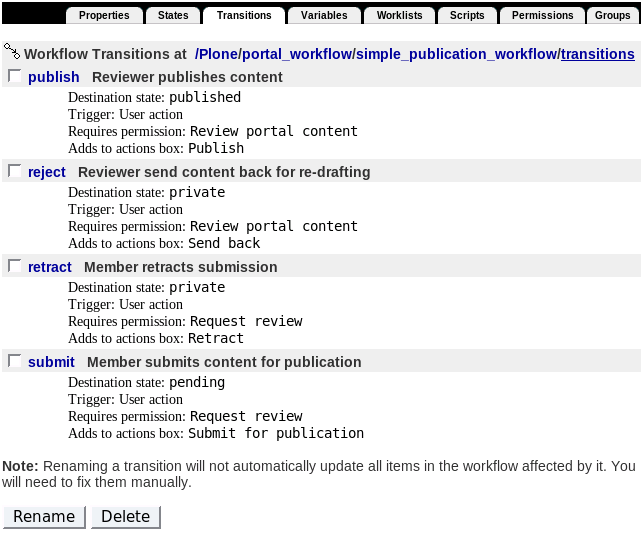

也紀念我們永遠的朋友 李士傑先生（Shih-Chieh Ilya Li）。
Plone 內容管理系統
簡單地說，Plone 就是一部「快速架站機」，除了操作便利的優點外，Plone 也具備企業級應用的功能彈性。如果你還在尋找更好用的 open source 內容管理系統，Plone 絕對值得一試。
◎ 什麼是 Plone
Plone 是一套網頁式內容管理系統 (Web Content Management System, Web CMS)，簡單地說，Plone 就是一部「快速架站機」，有了這套軟體，不熟悉技術的人，也能輕鬆地管理網站會員和內容，類似的工具例子有 XOOPS、Wordpress、Drupal、Joomla! 等。
下載 Plone 安裝後，透過所見即所得的網頁編輯器，使用者可以線上編輯多種內容，包括文件、新聞稿、行事曆、書籤連結、多媒體檔案等，再透過後設資料記錄、關鍵字索引、斷字斷詞、搜尋引擎等服務，方便地找到想要的內容。當然，也可以尋找合適的外掛模組，擴充更多的延伸功能。
除了操作便利的優點外，Plone 也具備企業級應用的功能彈性，採用這項技術的知名單位，包括有美國中情局 (CIA) 和太空總署 (NASA) [1] ，Novell 公司，還有聯合國、法國、巴西、紐西蘭等官方機構。更多的採用單位清單，可參考 https://plone.net/ 網頁資料。
從技術層面來看，Plone 以 Zope 為基礎。Zope 是 Z Object Publishing Environment 的縮寫，一套以 Python 程式語言撰寫的 Web Application Server 框架及實作品，它提供的服務包括網站伺服器、資料庫、會員及權限管理、搜尋引擎等，開發人員可以「站在巨人肩上」設計自己的模組或應用程式，而 Plone 就是架構在 Python 和 Zope 之上，著重於內容管理領域的應用程式。
| [1] NASA Science 是採用的網站之一，可造訪 https://nasascience.nasa.gov/ 網址。
◎ Zope 與 Plone 的發展歷史
在 1996 年之際，Zope 的作者 Jim Fulton 受邀擔任 Web CGI (Common Gateway Interface) 程式設計的講師，初識 CGI 技術的他，並不滿意它的架構方式，重新以 Python 語言開發了幾個提供網頁物件出版功能的模組，這些模組分別稱為 Bobo、Document Template、BoboPOS，後來在繼續擴充模組的情況下，Zope 的前身於焉誕生，Jim Fulton 並組成一家 Digital Creations 公司展開 Zope 的開發，接近 2000 年之際，Digital Creations 公司正式更名為 Zope 公司，專注 Zope 產品的商業化工作。
Zope 系統最早是針對新聞媒體界的應用需求所設計，因此除了一般的會員管理 (membership management)、安全機制 (ACL management)、內容物件管理 (content object management)、編目與索引 (catalog and index) 之外，也很快納入版本管理 (version control management)、工作流程管理 (workflow management) 及版型主題 (theme and skin) 等服務。這些入口網站所必備的服務功能，初期稱為 Portal Toolkit (PTK)，不久再稱為 CMF (Content Management Framework)，變成獨立的開放源碼專案，由於 CMF 擁有良好的擴充及延伸彈性，引發更多奠基在 CMF 之上的改善計畫，Plone 就是這類專案計畫中的佼佼者。
CMF 是一個在 Zope 開發環境之上的入口網站服務架框，由於它的開發焦點是在基礎服務模組的研發與測試，長久以來都有不夠穩定，介面不夠美觀、易用度不高的缺點，Plone 專案計畫的主持人 － Alan Runyan 與 Alexander Limi，便接手解決上述的問題，沒想到這樣的改善構想，迅速吸引廣大開發者的認同與參與，Zope 與 CMF 便退居 Plone 這顆閃亮巨星幕後了。
CMS 是個競爭激烈的市場 [2] ，Plone 社群過往的表現如何呢? 2003 年十月，O'Reilly 與 OSDir 舉辦「開放源碼社群送進 COMDEX」競賽，Plone 是優勝社群之一。2006 年十一月 Packt 舉辦 Open Source CMS Award 活動，Plone 獲得第三名。2007 年六月在 CMSWatch 的 Web CMS Report 四大評比中，Plone 獲得極高的平均分數。2007 年八月 Plone 3 推出，正式納入 OpenID 在內的支援。2008 年二月，Google 的 Highly Open Participation Contest 贊助 29 項 Plone 改善工作。
目前 Zope 和 Plone 開放源碼專案目前分別由 Zope Foundation 及 Plone Foundation 所維護開發，Zope 的版本主要分成 Zope 2 與 Zope 3 兩大系統，不過 Zope 3 是從頭撰寫的全新軟體，以 Component Architecture 作為設計框架，初期和 Zope 2 並不相容，但透過 Five 的橋接過渡，能讓 Zope 2 也應用到 Zope 3 的技術。
| [2] CMS Watch 整理的 Content Technology Vendor Map 列出了主要的 CMS 供應商。

◎ 便利的安裝過程
在 Windows、Linux、Mac 環境都能下載 Plone 自動安裝檔，協助使用者第一次安裝就上手。以 Windows Installer 為例，下載執行 Plone-3.1.2.exe 檔案後，設定管理員帳號密碼，透過 Plone Controller 就可以控制系統的啟動與停止。
|  |  |
如果把 Plone 視為處理內容的前台，那麼 Zope 就是管理系統的後台，這後台被稱為 Zope Management Interface (ZMI)，預設的執行埠號是 8080，也就是要從 https://localhost:8080/manage 這樣的網址，輸入安裝時所設定的管理員帳號密碼。
|  |  |
ZMI 操作方式類似檔案總管，左方的選項類似目錄，點擊後會在右方的畫面展開詳細的清單資訊。
預設會建立一個名為 Plone 的網站，點擊 Plone 後會列出完整的後台功能項目。不必過於擔心，想要進行基本的內容管理，並不需要了解複雜的後台功能，簡易的 Plone 前台介面就能滿足絕大部份的需求。
例如，會員註冊的設定方式，可由 Site Setup 的 Security 項目進行調整，最常見的設定方式，是指定使用者可以選擇自己的密碼，並擁有自己的目錄空間。
另外，管理員可以決定網站是否提示使用者能夠自行註冊，如果選擇要，首頁就會出現 Register 的提示字樣，如果選擇不要，管理員可以從 Site Setup 的 Users and Groups 項目新增帳號。
◎ 一致的內容管理介面
依據登入帳號的權限，使用者會看到不同的瀏覽與管理介面，但這些介面都很直覺，而且相當一致。
未登入帳號之前，只會看到 Log in 的提示，並不能管理內容。
以一般會員身份登入後，瀏覽擁有權限的內容項目，例如 My Folder 目錄裡，就會看到內容管理的選單提示。
以管理員身份登入的話，能夠管理所有的內容項目，包括顯示、新增、修改、調整狀態、分享、版本管理等功能。
Plone 預設提供的內容項目，包括有 Folder、Page、File、Image、News Item、Event、Link、Collection 等，一般 HTML 格式的內容以 Page 來管理，PDF 或 Office 格式的檔案以 File 來管理，圖片檔案以 Image 來管理，發佈的 News Item 會列在新聞區，Event 則會列在行事曆上。
以新增 Event 為例，待編輯的欄位分成「必填」與「選填」兩種，像標紅點的 Title 和 Event 開始與結束時間，都是必填欄位，若忘了填寫，系統會即時顯示警告訊息。本文的編輯框搭配圖形化的排版工具，使用者可以調整字形、設定連結、插入圖片或表格等。
令人耳目一新的是，Plone 3 開始導入即時編輯 (inline editing) 的 AJAX 功能，讓使用者可以快速編輯特定的資料欄位，例如點擊一下標題欄位，就可以直接修改標題的內容，而不必載入所有的內容資料。
◎ 便利的搜尋引擎服務
內容管理系統提供搜尋引擎並不稀奇，但 Plone 額外提供 Live Search 功能，使用者如果輸入 wel 字樣，系統會馬上顯示符合的內容項目，例如內容中包含 welcome 或 well 的內容項目都符合 Live Search 的顯示條件。

Plone 也支援關鍵字詞的索引功能，例如管理員於 News Item 內容編輯的畫面中，在 Categorization 選項裡可以設定 Category 內容，指的就是「關鍵字」。既有的關鍵字列在 Existing categories 方框裡，以藍底白字代表選用的關鍵字，按住 Shift 鍵，可一次點選多個關鍵字。想要新增關鍵字，在 New categories 方框裡填寫即可。
選用的關鍵字會出現在「filed under:」字樣之後。另外，Categorization 選項裡也可以設定相關內容，新增的相關內容會出現在 Related content 方框裡。
{kind=link}
歸功於內建的物件式資料庫，Plone 能夠動態地索引內容資料，有效地回應使用者的搜尋需求，另一方面，它也提供版本管理和復原功能，也就是說，使用者的每一步動作，系統都能記錄下來，如果誤刪了檔案，管理員就可以到 ZMI 介面取消刪除的動作，讓檔案復原。
◎ 群組與工作流程
Plone 支援基本的工作流程，預設情境是針對媒體出版業的需求，將內容項目分成 private、pending review、published 三種狀態，當使用者剛新增內容項目時，內容項目會處於 private 狀態，當使用者提交內容項目給審核者後，就會處於 pending review 狀態，直到審核者確認可以發佈時，內容項目就會處於 published 狀態，如果審核者退回給原作者，則內容項目又會處於 private 狀態。
上述的審核者是系統裡權限較高的群組身份，配合工作流程的需要，管理員可以到 Site Setup 的 Users and Groups 項目裡，設定審核者的名單。


如果想要採用預設之外的工作流程，就要從 ZMI 介面點選 portal_workflow 項目，顯示的 Simple Publication Workflow、Community Workflow、Intranet/Extranet Workflow 等，就是 Plone 完整支援的六種 workflow，每一種 workflow 都包括 state 和 transition 等的主要設定。例如，部份網站內容只想讓登入的內部會員能讀取，就可以採用 Intranet/Extranet Workflow。
◎ 小結
以上內容僅簡略介紹 Plone 的特色功能，更完整的特色介紹，可參考 https://plone.org/products/plone/features/3.0 網址，其他詳細說明，可參考 LearnPlone [3] 網站內容。如果想要為 Plone 網站加入新的模組功能，可以到 https://plone.org/products 或 https://www.contentmanagementsoftware.info/ 網址查詢。想要修改 Plone 介面或開發 Plone 應用程式的朋友，則可以查詢 Theme、Skin、Archetypes 等關鍵字，先找到入門的資料。
市面上既有的 Plone 書籍，可以參考 Andy McKay 撰寫的 The Definitive Guide to Plone，或是 Martin Aspeli 撰寫的 Professional Plone Development。雖然使用基本的 Plone 功能，並不需要 Python 程式語言的背景，如果想要進行修改或開發，那麼就得補充 Python 的知識。
Plone 開發者很重視操作親和度，在改善功能及介面美觀之餘，他們也注意相容於網頁標準。在可見的未來裡，類似 AJAX、OpenID、Mashup、ORM 的整合需求會日益殷切，包括 Plone 在內的 CMS 產品勢必要持續努力，才能繼續獲得使用者的青睞。
| [3] LearnPlone: https://learnplone.org/
◎ 關於作者
marr，現職是中研院資訊所研究助理。專長是技術文件撰寫、Linux系統整合、數位學習系統，興趣是英式搖滾、認知心理學、傳記文學，嚮往北歐的社會制度。電子郵件：
這個 E-mail 地址已經被防止灌水惡意程式保護，您需要啟用 Java Script 才能觀看
。
專欄總覽


E-Mail：contact@openfoundry.org Address：台北市南港區研究院路2段128號 中央研究院資訊科學研究所 . 隱私權條款. 使用條款